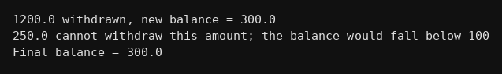

package inheritance;
public class Q264 {
static class BankAccount {
double balance;
BankAccount(double b){ balance = b; }
void deposit(double amt){ balance = balance + amt; }
void withdraw(double amt){
if(amt<=balance) balance = balance - amt;
else System.out.println("Insufficient funds");
}
}
static class SavingsAccount extends BankAccount {
SavingsAccount(double b){ super(b); }
void withdraw(double amt){
// balance 100 se neeche nahi jana chahiye
if(balance-amt<100)
System.out.println(amt+" cannot withdraw this amount; the balance would fall below 100");
else{
balance = balance - amt;
System.out.println(amt+" withdrawn, new balance = "+balance);
}
}
}
public static void main(String[] args) {
SavingsAccount s = new SavingsAccount(1000);
s.deposit(500);
s.withdraw(1200);
s.withdraw(250);
System.out.println("Final balance = "+s.balance);
}
}